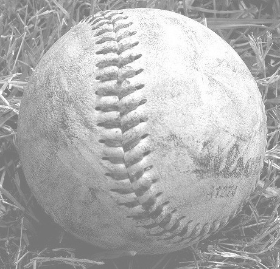

What is Sportal?

A network of sports leagues and pickup games available to individuals in one easy to use website.
Find or create a Pickup game
Users are able to locate leagues in their area. These leagues are inputted by organizations with existing leagues or users. These are leagues of all types, including town leagues, school leagues, sponsored leagues, or just backyard leagues.
Find or create a league
Users can search for pickup style events going on in their area. Individuals can search for pickup style events of all types of criteria such as sport, skill level, and location.